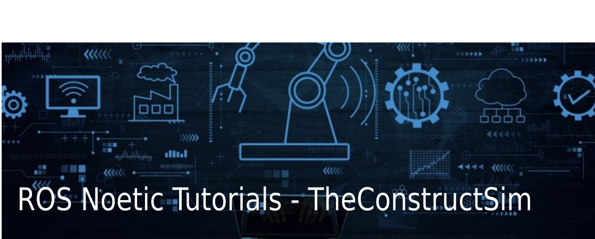
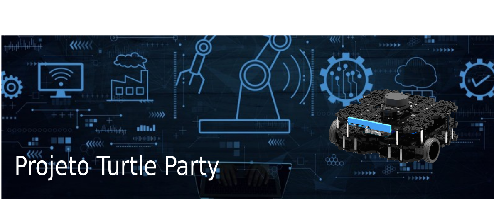

ROS Básico 101

Descrição do curso ROS Básico 101. Este curso introduz os conceitos básicos do ROS para iniciantes. Para aprender como configurar o ambiente local com Docker, consulte o guia de uso do Docker. Para aprender a utilizar o codespaces diretamente no seu navegador consulte o guia de uso do Codespaces
Tutoriais ROS
Introdução ao ROS
Assista a este vídeo introdutório sobre o ROS.
Repositório ROS Tutorials
Acesse o repositório com exemplos e tutoriais sobre ROS.
Visitar Repositório

Demonstrações
Projeto ROS1

Turtle Party
Explore o projeto Turtle Party para aprender mais sobre ROS1.